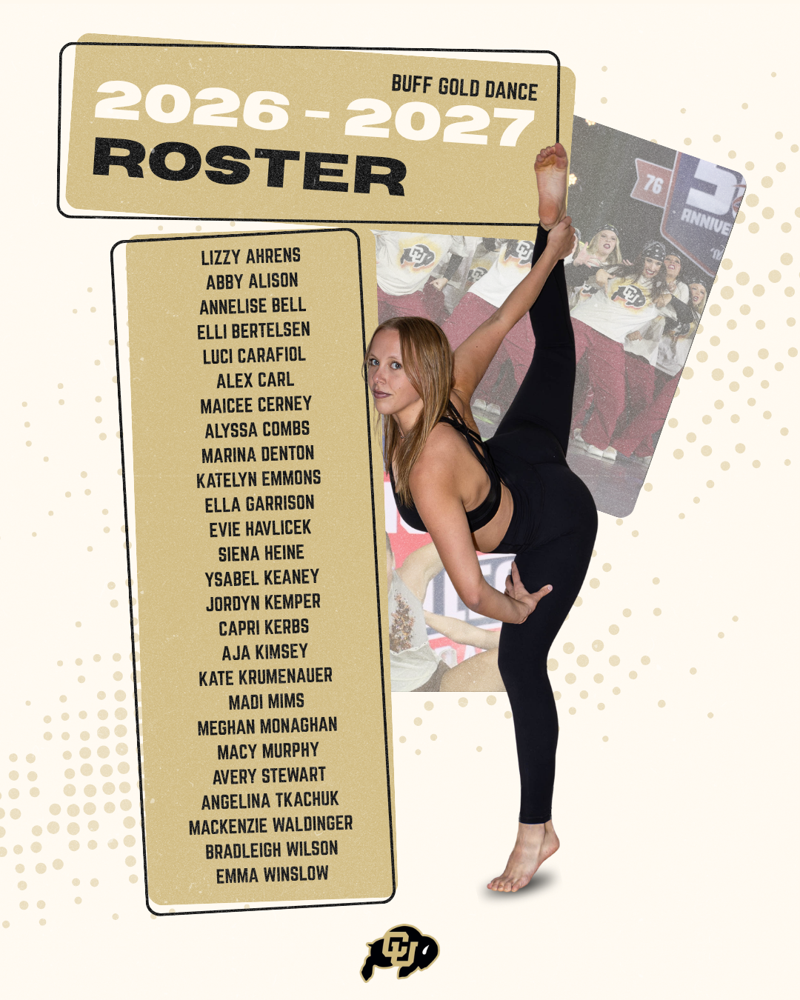
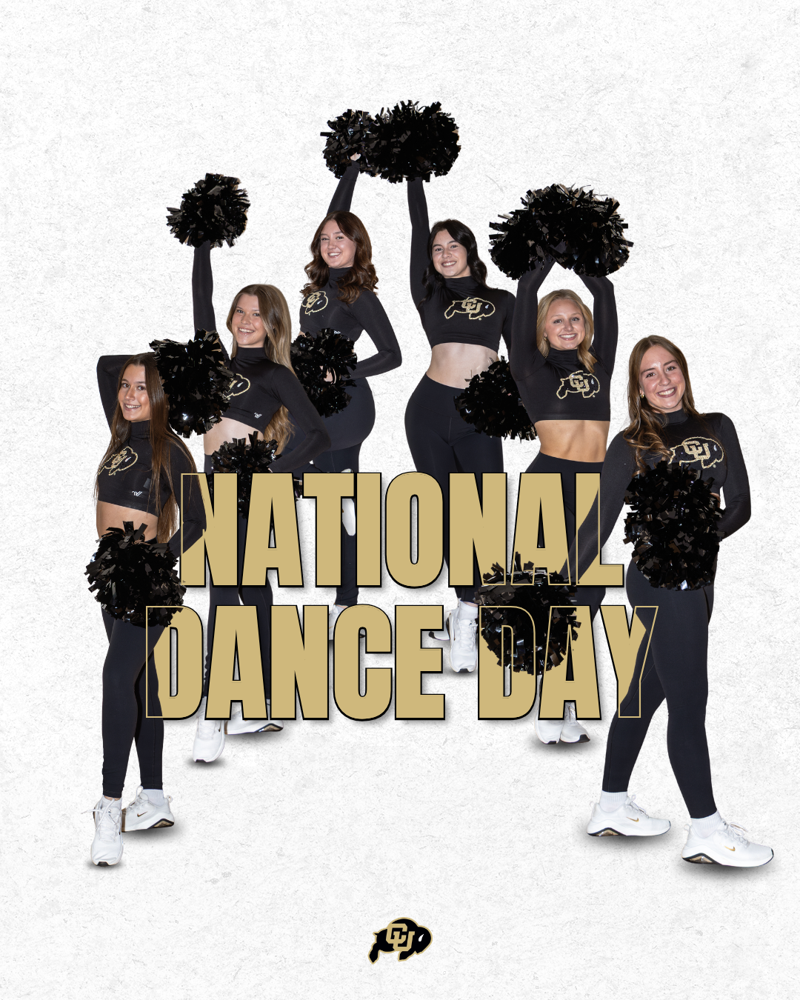
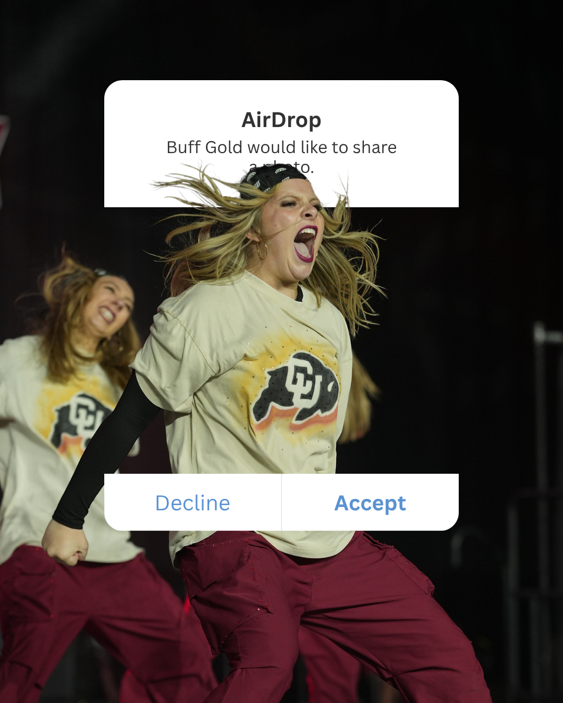

SOCIAL MEDIA · 2024–2026
Colorado Club Dance Team
Building an energetic, recognizable social presence that celebrates the team and connects with future dancers.
Role
Captain & social media lead
Cadence
Posts or reels every 2–3 days; practice stories in between
Impact
400% growth in profile and page views
Strategy with team spirit
The account keeps parents, friends, family, and prospective dancers in the know while giving the team a platform to show its personality. Content supports community, visibility, donations, and recruitment.
Audience & approach
Because recruitment is a central goal, I look for timely trends that resonate with Gen Z dancers and audience members. The strategy balances approachable behind-the-scenes practice stories with polished posts, reels, announcements, and moments that make potential future members excited to join.
Content in action



Results
Content and strategy contributed to a 400% increase in profile and page views. The work built a more discoverable account and a consistent visual voice across roster reveals, community moments, performance content, and timely celebrations.